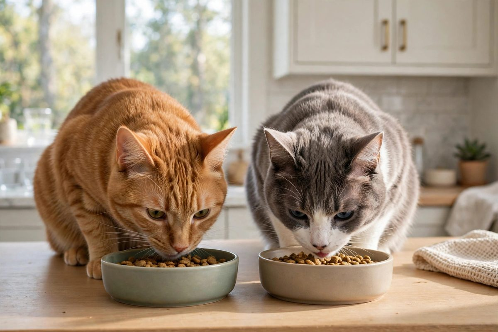

Home › Guides
Feeding Multiple Cats: How to Feed Two or More Cats Fairly

Feeding one cat is simple. Feeding two or more is a daily negotiation. One cat eats too fast and steals the other's food, one needs a special diet, and one is overweight while the other is thin. Without a system, the bold cat gets fat and the shy cat goes hungry. With a system, every cat gets the right food in the right amount.
Separate bowls, separate places
Give each cat its own bowl, in its own place, ideally in different rooms or at least out of sight of each other. Cats are solitary eaters by nature and many feel stressed eating next to another cat, even one they like. A cat that eats under pressure will eat too fast, or will leave food uneaten.
Feed at set meal times rather than leaving food down all day. That way you can see how much each cat eats, and you can remove the bowls after twenty minutes. Free feeding makes it impossible to know who ate what, and it is the main reason one cat in a multi-cat home becomes overweight.
Stopping food theft
Food theft is the biggest problem in multi-cat homes. The fast eater finishes its own bowl and moves on to the slower cat's. The fix is to feed the cats in separate rooms with the door closed, and to pick up the bowls when the meal is over.
Microchip feeders are the best solution for cats on different diets. Each feeder opens only for the cat whose microchip or tag it recognises, so a cat on a prescription diet cannot eat the other cat's food, and vice versa. They are an investment, but they pay for themselves in wasted food and vet bills.
Different diets in one home
It is common for one cat to need a special diet while the others eat a normal food. A kidney diet, a hypoallergenic diet, or a weight-loss food must be fed separately, because the wrong food can undo the treatment. Microchip feeders, separate rooms, and set meal times make this possible.
Do not feed all the cats the prescription diet for convenience, unless the vet says it is safe for all of them. Prescription diets are formulated for a specific condition and may not suit a healthy cat. Likewise, do not let the cat on the special diet eat the normal food.
Water, treats, and routines
Provide one water bowl per cat, plus one extra, in different places around the house. Cats drink more when water is available in several spots, and a shy cat may avoid a bowl that another cat guards.
Give treats individually, not from a shared bowl, and keep a note of who had what. A simple routine, same times, same places, same bowls, reduces tension and makes it easy to spot when a cat is off its food, which is often the first sign of illness.
Kittens, seniors and special diets together
A multi-cat home often mixes life stages. A kitten needs growth food, a senior may need a kidney diet, and an adult may need a weight-loss food, and each cat must eat only its own food. This is where separate rooms and microchip feeders become essential, because the wrong food can undo a treatment or unbalance a growing kitten.
Feed the kitten separately, in a room with the door closed, until it finishes. Feed the senior in a quiet spot, away from boisterous younger cats. If a cat needs a prescription diet, tell everyone in the house, and keep the food in a labelled container. A simple system, followed by everyone, is what makes multi-cat feeding work.
Frequently Asked Questions
How do I stop one cat eating the other's food?
Feed them in separate rooms with the door closed, and pick up bowls after 20 minutes. A microchip feeder is the most reliable long-term fix.
Can all my cats eat the same food?
Healthy adult cats of similar age can usually share a food. Cats with different life stages or medical diets need separate feeding.
How many water bowls do I need?
One per cat, plus one extra, placed in different rooms. Cats drink more when water is easy to reach.